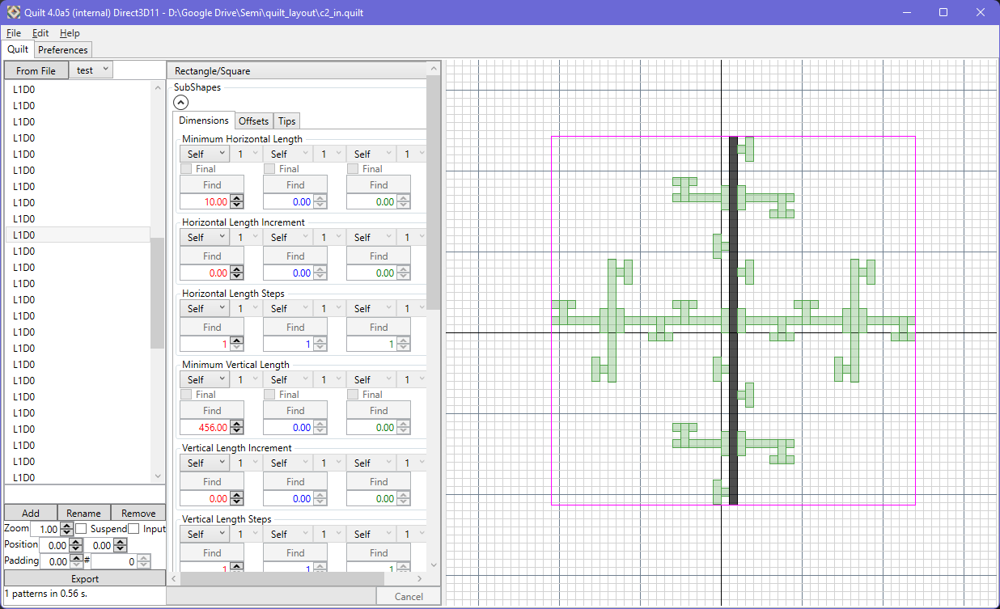
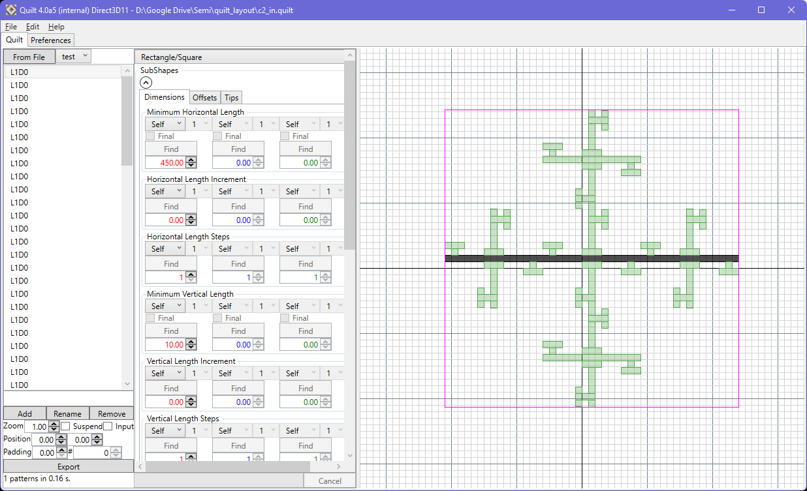
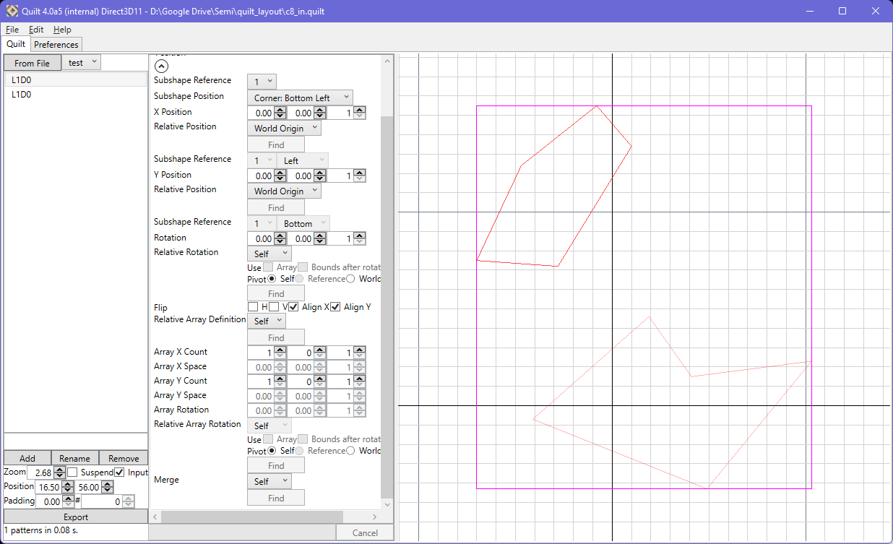
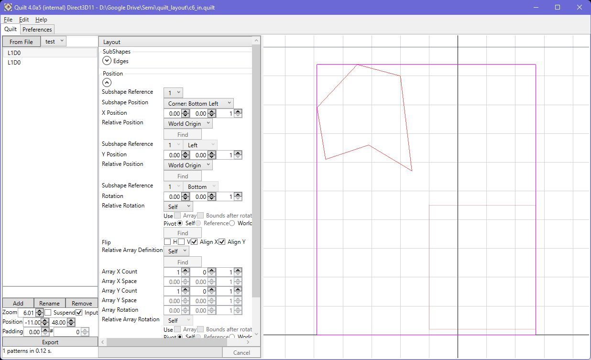
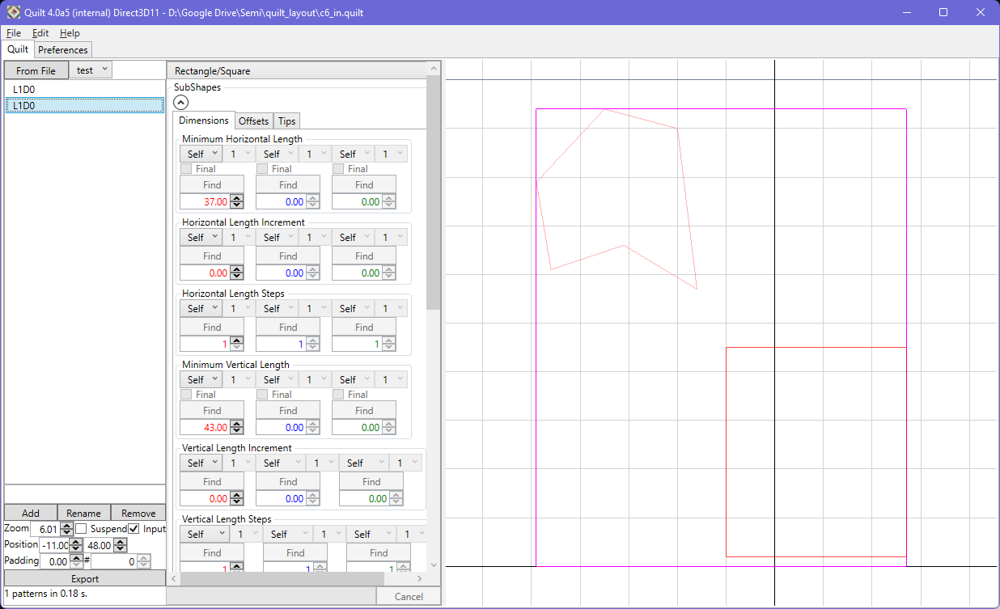
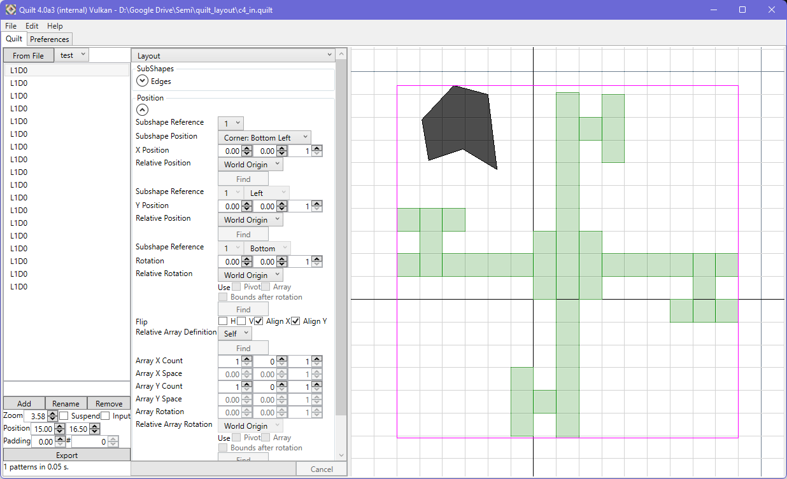
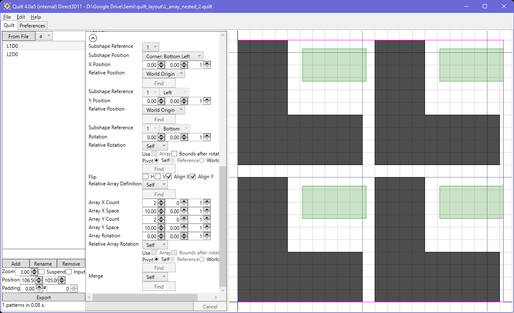
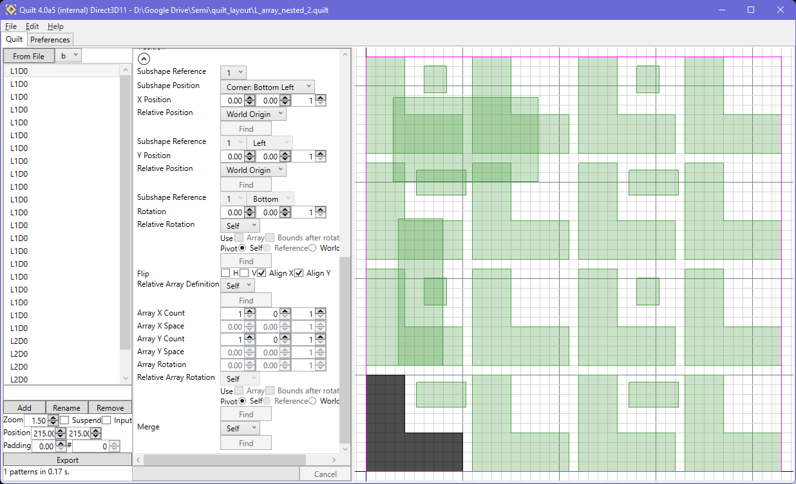

It is possible to use a layout file (GDSII or Oasis, including GZIP-compressed files) to define a pattern. Any cell can be used, available from the drop-down menu.
When a layout file is opened for pattern definition, the cell is queried for its geometry. Quilt will attempt to discover compatible geometry for mapping to Quilt primitives (rectangle, L, U, S, X, U, T). This includes transformation extractions (rotations, etc.). Note that the same result can occur for combinations of transformations; the simplest form will be chosen. Colinear points are removed during the processing, using the angular tolerance value to handle marginal cases.
For geometry that is orthogonal, but which cannot be described in primitive terms, rectangular decomposition is used. This will turn the complex geometry into a series of rectangular primitives. These will be ordered based on the bottom left corner of each rectangle, starting with the lower-left and working towards upper right in the layout. Each rectangle will have its position and rotation defined relative to the prior rectangle, in order to ease pattern variation set-up; it may be that you need to adjust these default relationships, however. Best effort is made to create a minimal representation, but this is not guaranteed.

By default, the decomposition will produce vertically oriented rectangles. If desired, horizontal orientation can be chosen by deselecting the 'vertical decomp' option in the preferences tab. Changing this option will not cause a re-evaluation of existing decomposition; re-create the pattern from the layout file to see the change.

The decomposed rectangles are displayed in both 'input' and 'final' display modes, to keep consistency with the way that the tool works generally. On export, however, the decomposed rectangles will be subject to a Union to reduce the output to the minimum number of polygons.
The relative transforms are intended to make set-up of patterns simple.
For non-orthogonal primitives coming from a loaded layout file, the shapes will be presented as a list of point coordinates using the reserved 'layout' shape type. The coordinates can be changed as desired, and the shape will always be closed by the system. The 'layout' shape type is reserved only for this situation and is not otherwise usable.
|  | |
|  |  |
|  |
Arrays of cell references are handled, but nested situations will force a bake of the geometry in order that the pattern can be defined using Quilt.
|  |  |